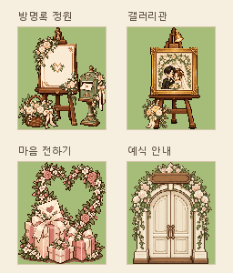

11차 · 네 공간 입구 그림
방명록과 마음 전하기를 96×112로 제작했습니다. 기존 배치·그림자·터치 동작은 유지합니다. 아래 광장은 실제 에셋 로더와 광장 장면을 사용하는 정지 검토 화면이며, 방명록 API와 저장소에 기록하지 않습니다.
그림을 불러오고 있어요.
현재 광장 · 입구 영역
그림을 누르면 해당 입구 동작을 확인합니다.
검토 화면에서는 이동 요청만 표시합니다.96×112 칸 · 2×2 비교

방명록과 마음 전하기를 96×112로 제작했습니다. 기존 배치·그림자·터치 동작은 유지합니다. 아래 광장은 실제 에셋 로더와 광장 장면을 사용하는 정지 검토 화면이며, 방명록 API와 저장소에 기록하지 않습니다.
그림을 불러오고 있어요.
그림을 누르면 해당 입구 동작을 확인합니다.
검토 화면에서는 이동 요청만 표시합니다.